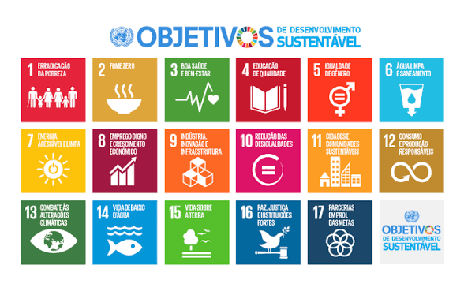

Sustentabilidade e descarte consciente
A separação adequada dos resíduos é essencial para reduzir impactos ambientais, proteger recursos naturais e incentivar práticas sustentáveis dentro e fora da universidade. Pequenas atitudes possuem grande impacto coletivo e ajudam diretamente na preservação do meio ambiente.
O EcoConsciente Unisagrado é um projeto voltado à conscientização ambiental e ao incentivo de práticas sustentáveis dentro do ambiente universitário. O objetivo principal é informar sobre o descarte correto de diferentes tipos de resíduos e destacar como pequenas atitudes podem gerar impactos positivos para o meio ambiente e para a sociedade.
Muitos materiais descartados incorretamente podem contaminar o solo, a água e comprometer a saúde pública. Ao mesmo tempo, diversos resíduos possuem potencial de reaproveitamento e reciclagem quando encaminhados corretamente.
Através deste site, busca-se promover educação ambiental de forma acessível, prática e objetiva, incentivando hábitos mais conscientes e sustentáveis no cotidiano acadêmico e pessoal.
Pilhas e baterias contêm metais pesados e substâncias químicas altamente poluentes, como chumbo, mercúrio e cádmio. Quando descartadas incorretamente, essas substâncias podem infiltrar-se no solo e contaminar lençóis freáticos.
Além do impacto ambiental, o descarte inadequado também oferece riscos à saúde humana e aos trabalhadores responsáveis pela coleta dos resíduos.
Após a coleta, os materiais passam por processos especializados de separação química e mecânica. Parte dos metais pode ser reutilizada na fabricação de novos produtos industriais.
A universidade possui ponto de coleta específico para pilhas e baterias.
O óleo descartado incorretamente pode contaminar grandes volumes de água e prejudicar a oxigenação de rios e lagos.
Quando jogado na pia, também provoca entupimentos e aumenta os custos de tratamento de esgoto.
Pode ser transformado em biodiesel, sabão e outros produtos reutilizáveis.
Armazene o óleo frio em garrafas PET bem fechadas antes da coleta.
Equipamentos eletrônicos possuem componentes químicos e metais que não devem ser descartados junto ao lixo comum.
O crescimento do consumo tecnológico torna o descarte correto essencial para reduzir resíduos e desperdícios.
Peças e matérias-primas podem retornar à indústria através da reciclagem especializada.
Sempre que possível, remova informações pessoais dos aparelhos antes do descarte.
Medicamentos e embalagens farmacêuticas podem contaminar água e solo quando descartados incorretamente.
Mesmo embalagens aparentemente vazias podem conter resíduos químicos.
Alguns materiais podem passar por reciclagem após tratamento específico.
A universidade possui local apropriado para descarte desse tipo de material.
Pode conter materiais biológicos e perfurocortantes capazes de transmitir doenças e causar acidentes graves.
Pode passar por esterilização, incineração controlada e outros processos específicos.
A separação correta reduz riscos de contaminação e melhora a segurança sanitária.
Reagentes laboratoriais podem ser tóxicos, inflamáveis e corrosivos.
O descarte inadequado pode provocar acidentes químicos e contaminações graves.
Cada substância exige protocolos específicos de descarte e tratamento.
Nunca descarte reagentes em pias ou recipientes inadequados.
Papel, plástico, vidro e metal possuem grande potencial de reciclagem e reaproveitamento.
A separação adequada reduz o volume de resíduos enviados para aterros sanitários.
Os materiais recicláveis passam por triagem e transformação em nova matéria-prima.
Utilize os pontos de coleta seletiva da universidade.
Os Objetivos de Desenvolvimento Sustentável (ODS) são metas globais estabelecidas pela Organização das Nações Unidas (ONU) para promover desenvolvimento sustentável, preservação ambiental, justiça social e melhoria da qualidade de vida.
As práticas apresentadas neste projeto estão diretamente relacionadas à preservação do meio ambiente, consumo consciente, descarte correto de resíduos e fortalecimento da educação ambiental.
Erradicação da pobreza através de melhores condições sociais e sustentáveis.
Combate à fome e incentivo à agricultura sustentável.
Promoção da saúde e bem-estar da população.
Educação de qualidade e conscientização ambiental.
Igualdade de gênero e inclusão social.
Proteção da água potável e melhoria do saneamento.
Uso de energia limpa e acessível.
Trabalho digno e crescimento econômico sustentável.
Inovação, indústria sustentável e infraestrutura responsável.
Redução das desigualdades sociais.
Cidades mais sustentáveis, seguras e resilientes.
Consumo e produção responsáveis.
Combate às mudanças climáticas.
Preservação da vida marinha e dos oceanos.
Proteção da vida terrestre e dos ecossistemas.
Promoção da paz, justiça e instituições eficazes.
Parcerias globais para alcançar o desenvolvimento sustentável.

Muitos resíduos descartados incorretamente permanecem no meio ambiente por décadas ou até séculos, causando impactos ambientais prolongados e dificultando a recuperação dos ecossistemas.
Podem causar contaminação ambiental durante décadas devido aos metais pesados presentes em sua composição.
Seu impacto ocorre principalmente pela rápida contaminação da água e do solo quando descartado incorretamente.
Possuem componentes que podem levar centenas de anos para decomposição completa.
Dependendo do material, podem levar décadas para se decompor e ainda liberar resíduos químicos.
Além do risco biológico, alguns materiais podem permanecer no ambiente por muitos anos.
Algumas substâncias químicas podem permanecer ativas e contaminantes por longos períodos.
Mais de 400 anos para decomposição completa.
Tempo indeterminado de decomposição na natureza.
Entre 200 e 500 anos para decomposição.
De 3 a 6 meses dependendo das condições ambientais.
Sustentabilidade significa utilizar os recursos naturais de maneira consciente, equilibrando desenvolvimento, preservação ambiental e qualidade de vida.
Separar corretamente os resíduos reduz impactos ambientais, fortalece a reciclagem e contribui para um futuro mais sustentável.
A conscientização ambiental dentro das universidades possui papel fundamental na formação de cidadãos mais responsáveis e preparados para enfrentar desafios ambientais atuais e futuros.